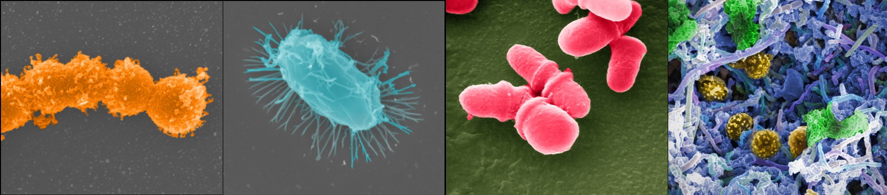

Clinical Axis
Fasting
Metabolic, inflammatory, and cardiovascular effects of medically supervised long-term fasting.
Explore axisMechanistic toxicology, microbiome science, and translational fasting research in one connected portfolio.
Clinical Axis
Metabolic, inflammatory, and cardiovascular effects of medically supervised long-term fasting.
Explore axisExposure Axis
Evidence on real-world formulations, mixture effects, carcinogenic signals, and regulatory relevance.
Explore axis
Systems Axis
How diet and xenobiotic exposures shape microbiome ecology and host resilience.
Explore axisChemical Axis
Comparative toxicological profiling of BPA and BPA-free alternatives.
Explore axisFood System Axis
Long-term and multi-omics protocols improving reproducibility in crop safety assessments.
Explore axisScrollytelling
Scroll through the core themes to see how molecular mechanisms inform clinical interventions and population health strategy.
Interrogate formulation and co-formulant effects beyond single-compound assumptions.
Move from rodent and in vitro signatures to human dietary and biomarker observations.
Integrate mechanistic and microbiome insights into guided therapeutic practice.